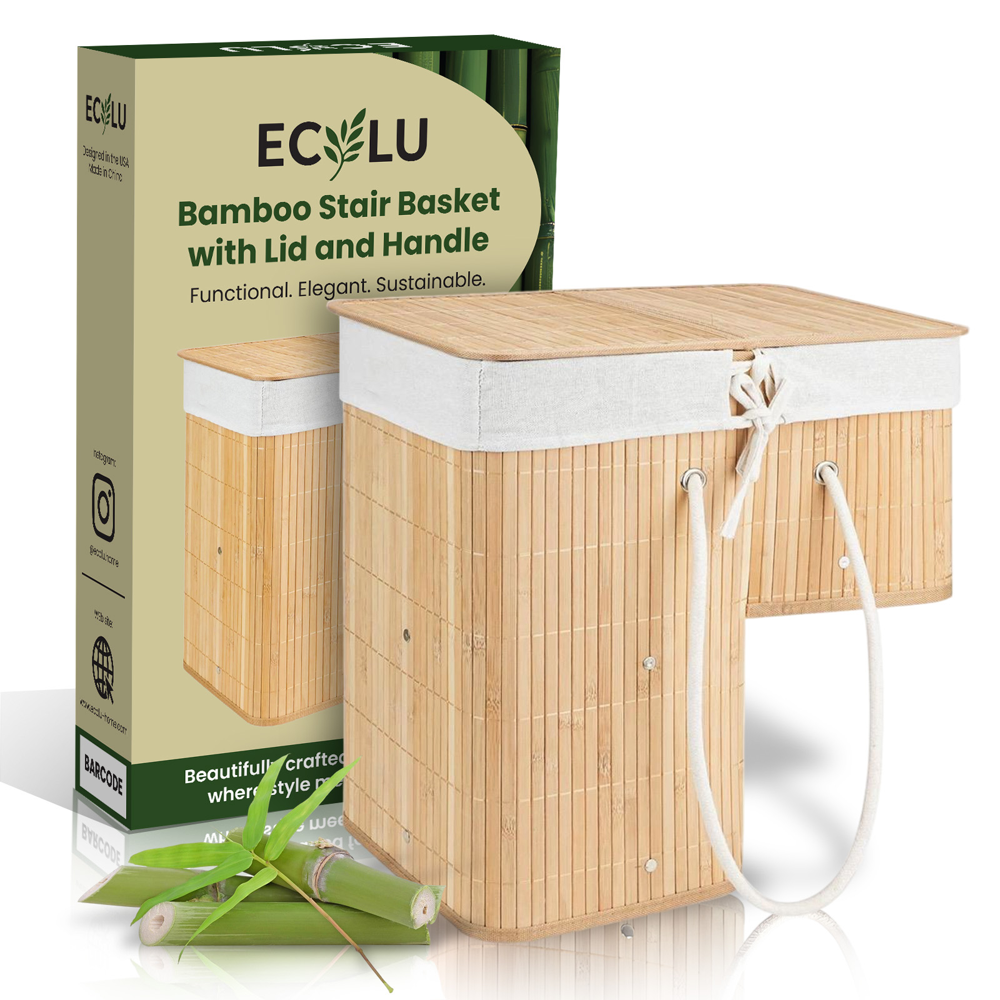
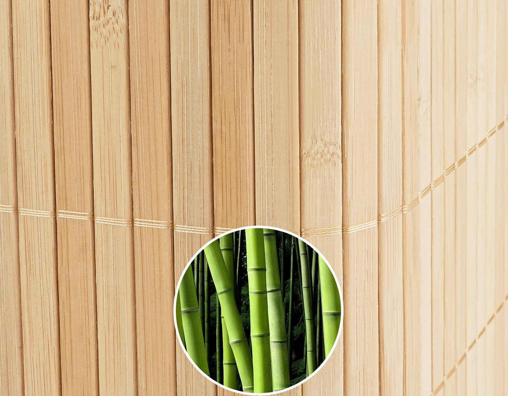
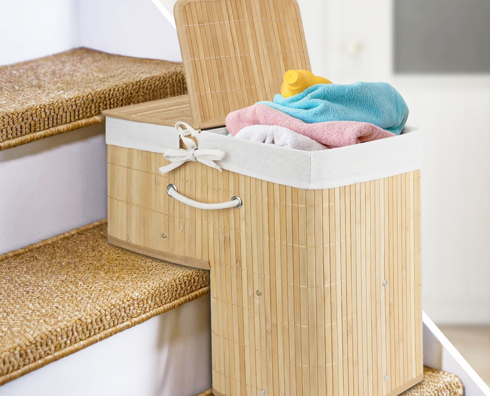
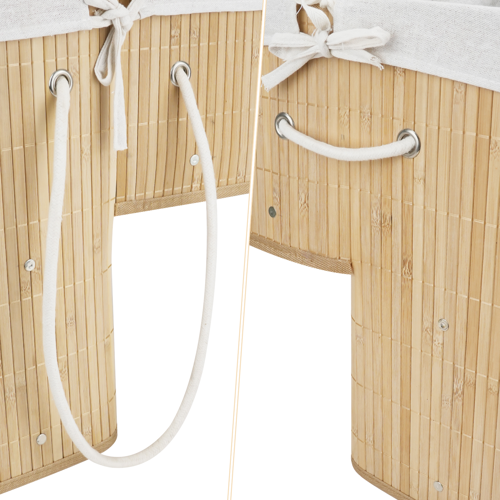
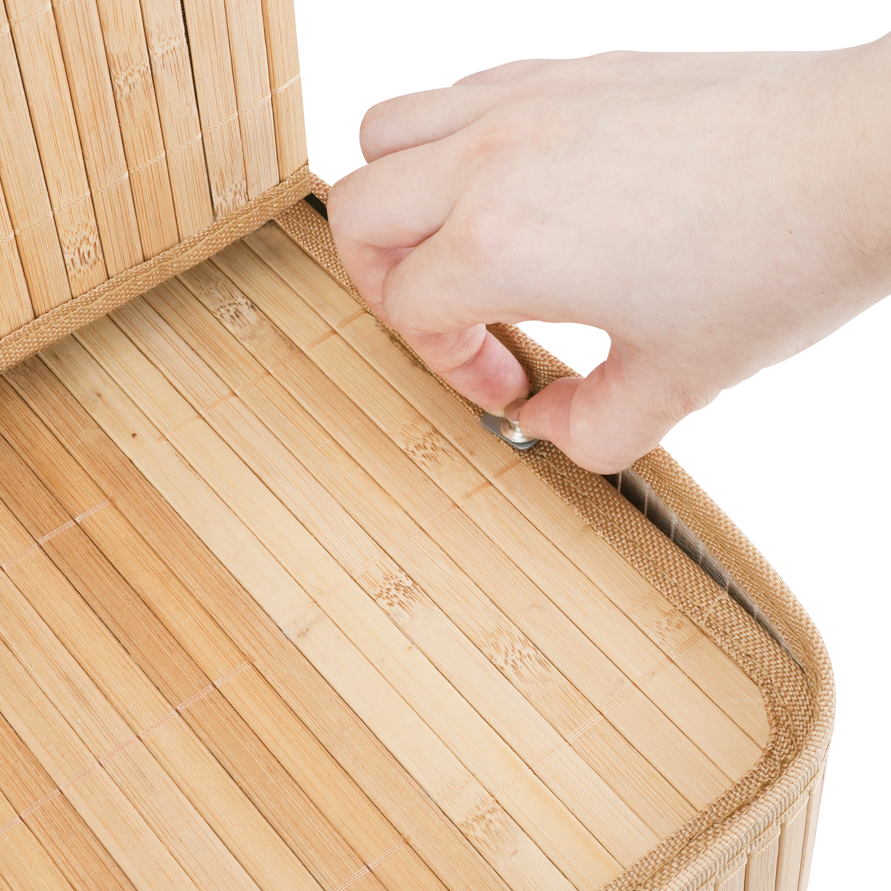
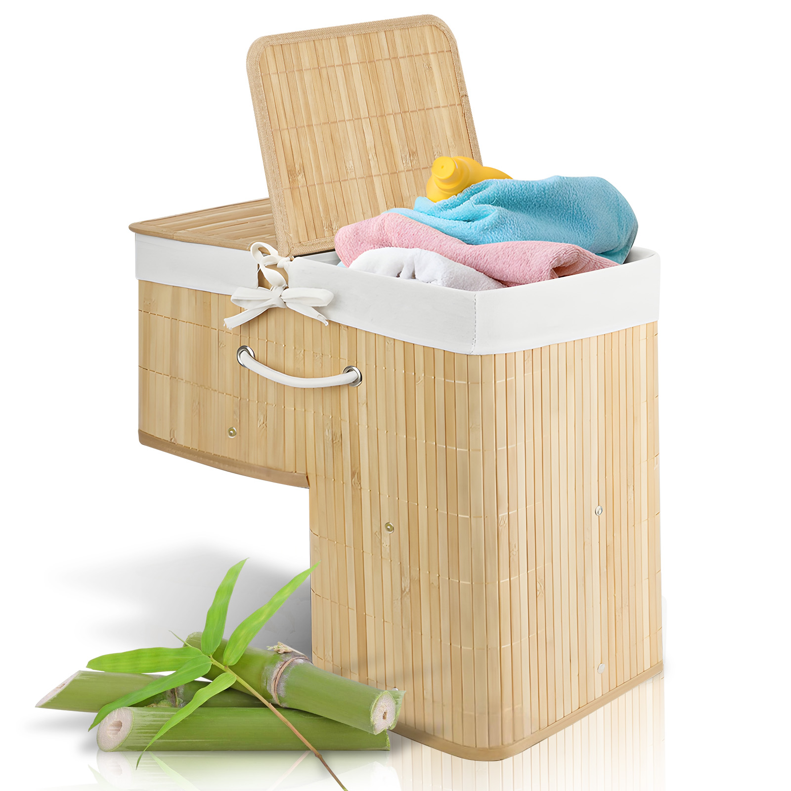
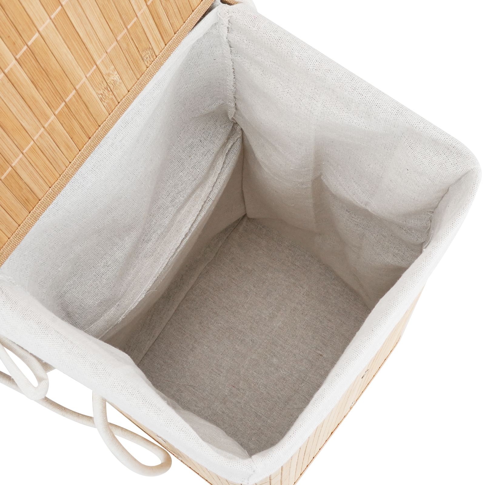
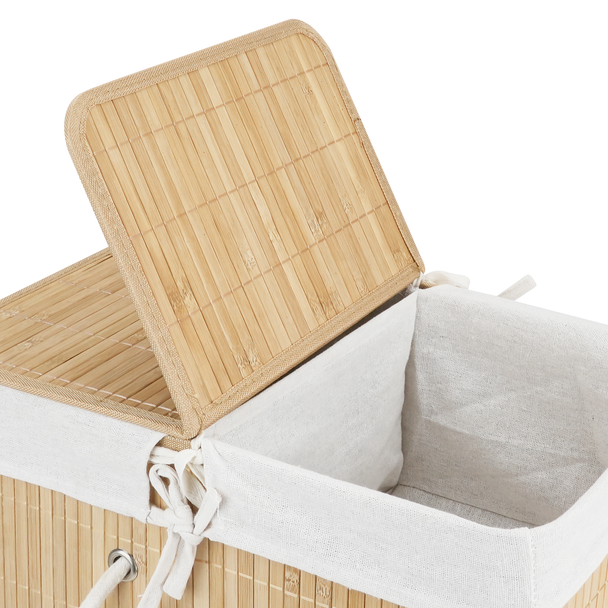
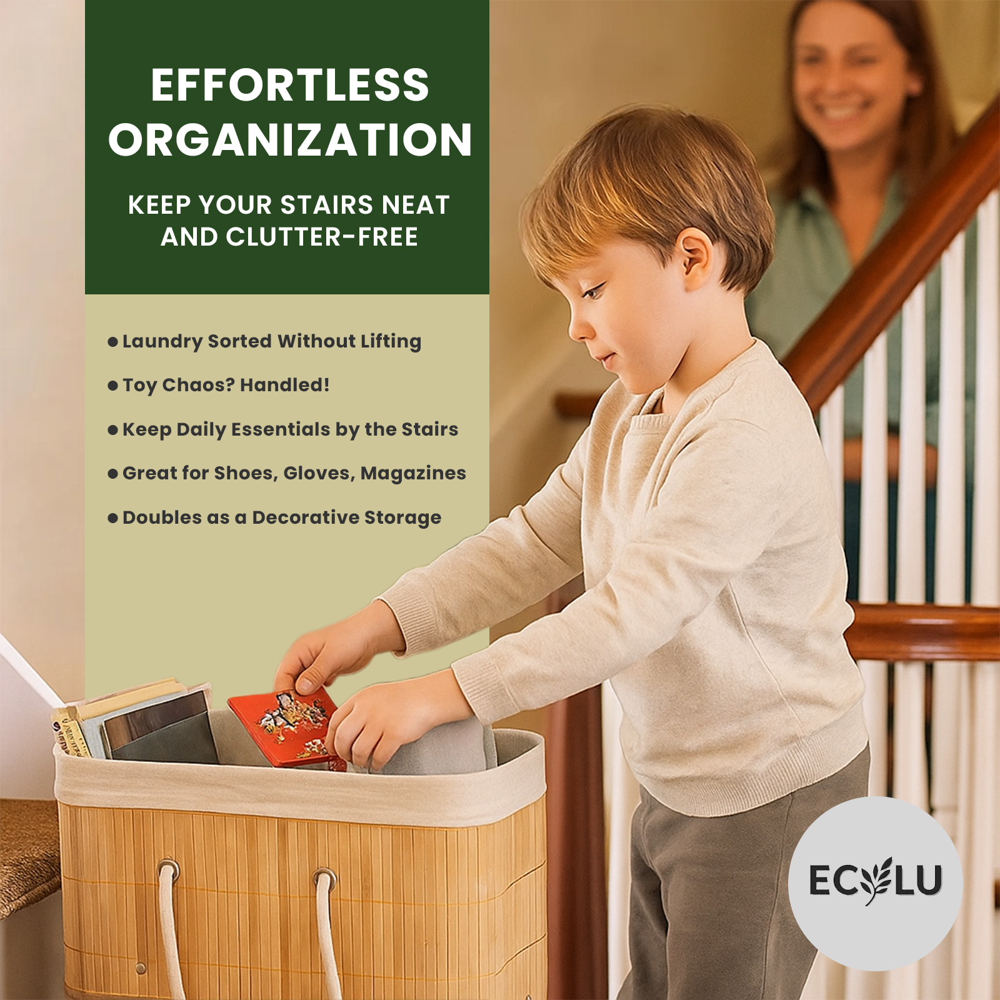
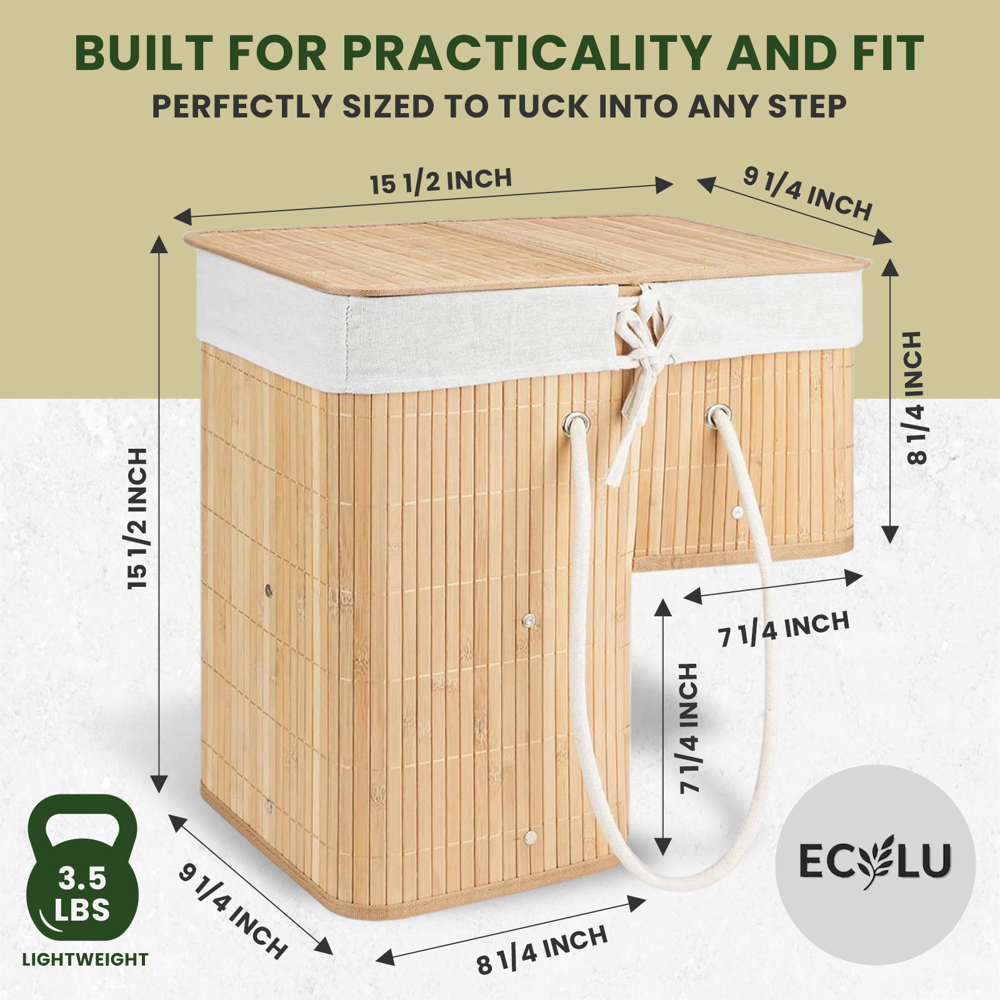

An inverted L-shape, made of natural bamboo, that tucks neatly into any stair corner. For the books, shoes and laundry you carry every day.

Four small decisions that turn a daily-use object into something you actually enjoy living with.

Naturally elegant and built to last — resilient to dings, scratches and the humidity of everyday homes.

Designed to sit cleanly on any stair surface — soft contact points keep your treads protected, day after day.

Cotton rope drops out for carrying, tucks back into the eyelets when it lives on the step — no tripping hazard going up or down.

Six reinforced metal clips lock the bamboo panels together for a sturdy, wobble-free build that holds its shape for years.
Most baskets are squares. Stairs are not. The Stair Basket borrows the negative space of the step itself — long side on the floor, short side resting on the riser above — so it never blocks the path.

A full 15½″ tall section sits firmly on the floor for stability.
8¼″ of bamboo rests on the next riser, hidden in plain sight.
The cotton liner divides the inside — sort darks from lights, or books from shoes.
Books on the way upstairs. Shoes by the door. Towels for the bath. Toys at the end of the day. It quietly handles them all.
Magazines, novels, the next chapter waiting on step five.
A landing spot for the pair you'll wear tomorrow morning.
Sort darks and lights — the removable cotton liner lifts right out.
A lid closes the day. Tomorrow they'll be exactly where you left them.
Each material earns its place. No plastic frame, no padded shortcuts — just bamboo, cotton, cotton rope and a little hardware.

A natural unbleached cotton liner ties into the basket with four small bows. Pull it out when laundry day arrives — toss it in with the load.

The bamboo lid folds in half along a fabric hinge, so you can open one side to drop something in without lifting the whole top.

Thick natural rope threaded through riveted eyelets, with a 7¼″ drop. Comfortable enough for adult hands, light enough for kids to help.
Designed against the standard residential stair tread — so it lands cleanly on most U.S. and European staircases.

It ships flat — pull the sides apart and the body snaps into shape.
Two metal rails clip into the top to lock the shape in place.
A two-piece bamboo floor that distributes weight evenly across the bottom.
Drape the liner over the rim — the seams find their corners naturally.
Four small ties secure the liner to the rim, keeping it from slipping.
The short side fits the step. The long side carries the floor. Done.
Bamboo is one of the fastest-renewing materials on earth — and one of the most resilient. We treat it like the precious resource it is.
Fast-growing, renewable, naturally resilient. No plastic frame, no synthetic core, no hidden particle board.
Sourced from responsibly managed forests with verified chain-of-custody. Audited every year, top to bottom.
Cardboard outer, paper inserts, soy-based inks. No foam, no plastic clamshell — the box goes straight in the bin.
"Finally something that fits the awkward space at the bottom of our stairs. The kids actually use it."
"Looks much more expensive than it is. The bamboo is solid and the liner is a nice touch — I use mine for towels in the bathroom."
"Set up in maybe 90 seconds with my kid 'helping.' The L-shape is genuinely clever, not a gimmick."
Yes. The short side is 8¼″ tall — comfortably below the standard 7″–8″ U.S. residential step rise. The long side (15½″) clears most stair-tread depths (typically 10″–11″).
Around 25 liters across the two compartments — roughly one full laundry load, a stack of 15 large books, or three pairs of adult shoes plus accessories.
The lid is decorative, not load-bearing. It will support light items placed on top (a folded sweater, a houseplant pot) but it is not designed as seating.
Yes — untie the four corner bows, lift it out, and machine-wash cold on gentle. Air-dry to keep its shape. The bamboo body wipes clean with a damp cloth.
Yes. The basket folds flat for shipping and assembles in about 60 seconds — no tools, no hardware bag, no instructions to lose.
30 days, no questions. If it doesn't fit your stairs or your home, send it back.
Available exclusively on Amazon · Prime eligible · Backed by 4.8★ verified reviews.